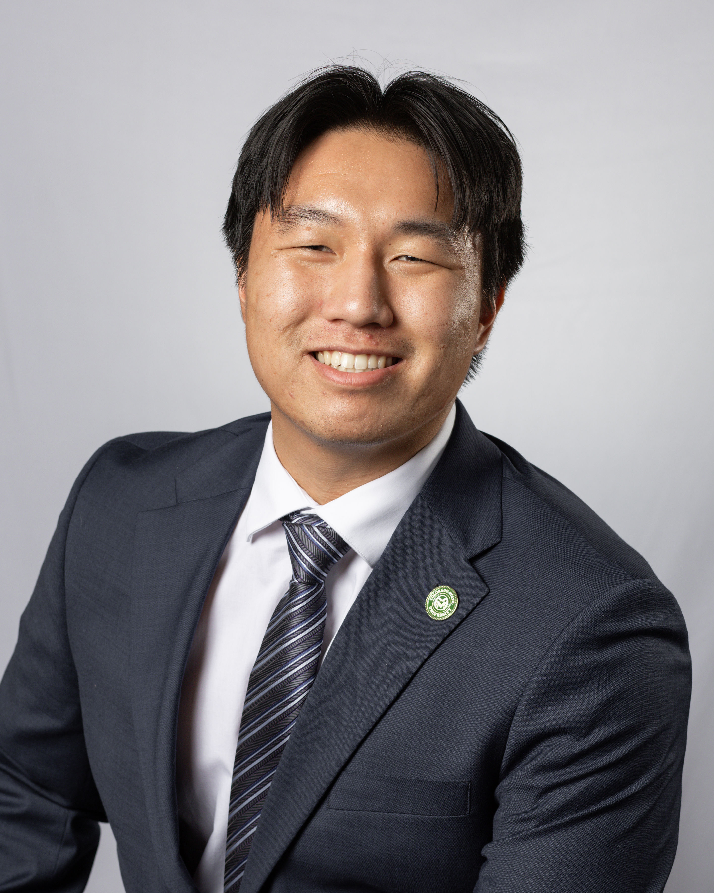
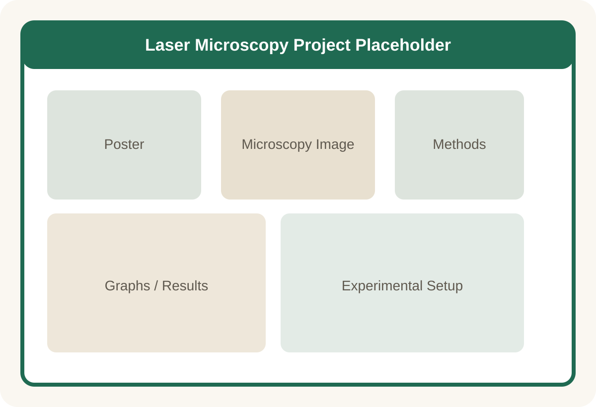
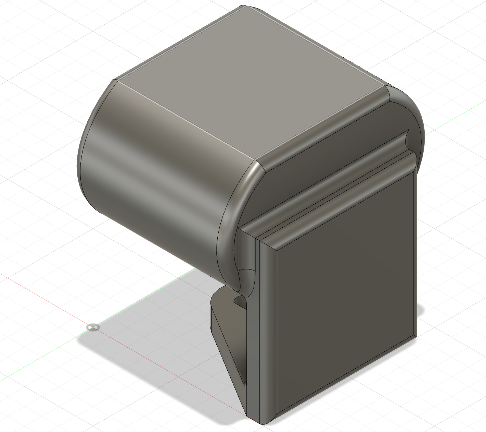
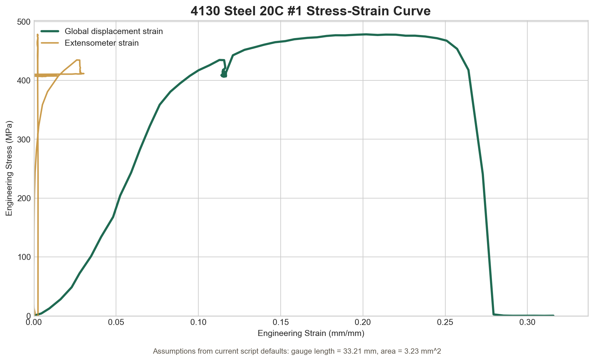
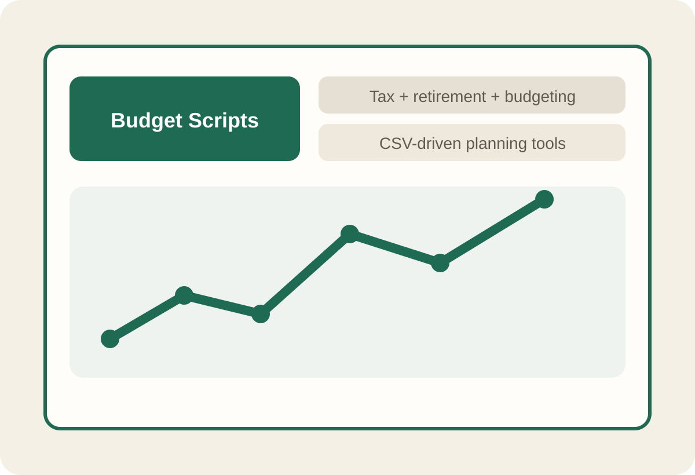

Biomedical + Mechanical Engineering
Building projects that connect design, analysis, and real-world making.
I’m Brenton Yasuoka, a Colorado State University student expected to graduate in May 2026 with B.S. degrees in Biomedical Engineering and Mechanical Engineering.
Based in Fort Collins, Colorado

About Me
Engineering student with one foot in research and the other in building things that actually work.
I enjoy projects that move between analysis and hands-on execution, whether that means biomedical imaging, mechanical design, lab data processing, or writing software to make a workflow easier to use and understand.
About Me
I like projects that ask for both technical depth and practical judgment.
My background spans biomedical engineering, mechanical engineering, student leadership, research, and hands-on prototyping. I’m especially drawn to work where hardware, computation, and design all have to come together in a way that is usable in the real world.
Across this portfolio, that shows up in different forms: optical systems, CAD-driven product concepts, data-processing tools for lab workflows, and small software utilities built to answer real questions clearly.
Visual Highlights
Scroll sideways to skim the kinds of work featured in the portfolio.



